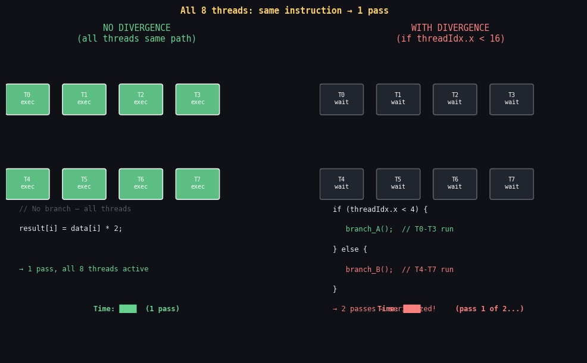
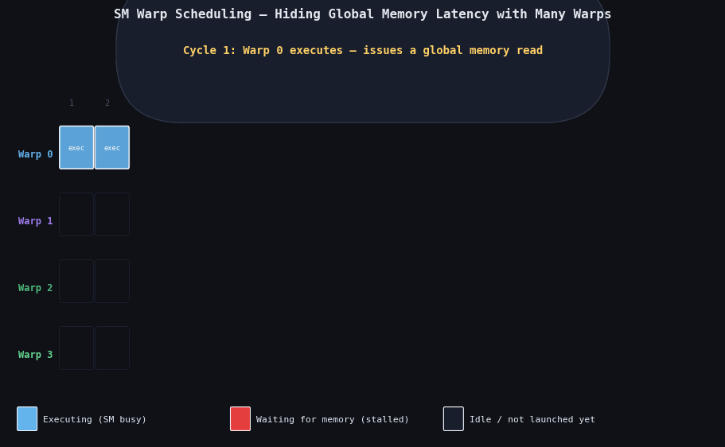

The warp is the fundamental execution unit of the GPU. Not the thread. Not the block. The warp. Everything about GPU performance — divergence, occupancy, memory coalescing, shuffle operations — is defined at the warp level. If you understand warps, you understand CUDA.

Without divergence (left): all 32 threads execute the same path simultaneously — full SIMT efficiency. With divergence (right): threads taking different branches are serialized — the warp executes both paths sequentially, cutting throughput by up to 2×.
1. What a Warp Is
A warp = 32 consecutive threads from the same block.
When a block of 256 threads is assigned to an SM, it's split into warps:
Warp 0: threads 0-31
Warp 1: threads 32-63
Warp 2: threads 64-95
...
Warp 7: threads 224-255
The SM's warp scheduler issues ONE instruction to ALL 32 threads in a warp
simultaneously, every clock cycle. All 32 threads execute in lockstep.
SIMT = Single Instruction, Multiple Threads
(analogous to CPU's SIMD, but the "width" is hidden from the programmer)2. Warp Scheduling — Latency Hiding

The SM's warp scheduler switches between ready warps every cycle. When warp A issues a memory load (800-cycle latency), the scheduler immediately runs warp B, C, D... — hiding the stall. High occupancy = more warps to switch between = more latency hidden.
An SM has 4 warp schedulers, each can issue 1 instruction/cycle.
Each SM can hold up to 64 active warps (2048 threads).
When a warp stalls (e.g., waiting for global memory — 800 cycles):
→ Scheduler picks a DIFFERENT ready warp to issue
→ The stalled warp waits in the background
→ When its memory returns, it becomes "ready" again
Timeline (simplified):
Cycle: 1 2 3 ... 800 801 802
Warp 0: [MEM_LOAD] ─────────────► [ready, resumes]
Warp 1: [ISSUE inst] [ISSUE]
Warp 2: [ISSUE inst] [ISSUE]
...
Warp 0 didn't "stall" the SM — other warps kept it busy!
This is why GPUs don't need large L1 caches:
instead of caching to reduce latency, they use many warps to HIDE it.3. Occupancy — How Many Warps Are Active
Occupancy = (active warps per SM) / (max warps per SM)
Max warps per SM: 64 (A100)
If your kernel has 256 threads/block and 4 blocks fit per SM:
Active warps = 4 blocks × (256/32) = 4 × 8 = 32 warps
Occupancy = 32/64 = 50%
Higher occupancy → more warps to hide memory latency → better throughput
What limits occupancy:
1. Registers/thread: 32 regs/thread × 256 threads = 8192 regs/block
65536 regs per SM / 8192 = 8 blocks max → 8×8 = 64 warps = 100% ✓
2. Shared memory: if kernel uses 32KB/block and SM has 96KB:
96KB / 32KB = 3 blocks max → 3×8 = 24 warps = 37.5% ← limited!
3. Block size: if blockSize=1024, only 2 blocks fit (2048/1024=2)
→ 2×32 = 64 warps = 100% ✓ (but huge block may have divergence)4. Warp Divergence — The SIMT Trap
When threads in a warp take different paths in an if/else,
the GPU executes BOTH paths, masking out inactive threads.
This is called warp divergence, and it serializes execution.
Example:
if (threadIdx.x < 16) {
do_branch_A(); // threads 0-15 active
} else {
do_branch_B(); // threads 16-31 active
}
What the hardware does:
Pass 1: threads 0-15 execute branch A, threads 16-31 are MASKED OUT (idle)
Pass 2: threads 0-15 are MASKED OUT (idle), threads 16-31 execute branch B
Total time = time(branch A) + time(branch B)
vs ideal = max(time(branch A), time(branch B))
→ Up to 2× slower for this balanced split Worst case: each of the 32 threads takes a different path
→ 32 sequential passes!
→ Effective throughput: 1/32 of peak
Divergence cost:
─────────────────────────────────────────────────────────
Splits | Paths | Time multiplier
───────┼───────┼─────────────────
1 | 2 | 2×
2 | 3 | 3×
... | ... | ...
31 | 32 | 32×
─────────────────────────────────────────────────────────5. Detecting Divergence
# Nsight Compute metric for divergent branches:
ncu --metrics smsp__sass_branch_targets_threads_divergent.sum \
./my_program
# Or use the "Warp State Statistics" section in Nsight Compute GUI
# Look for "Not Selected" cycles — these are cycles where a warp
# was eligible but another warp was chosen (mild divergence effect)6. Patterns to Eliminate Divergence
Pattern 1: Sort data before processing
// Bad: random data causes divergence
if (data[idx] > threshold) {
expensive_path(data[idx]);
} else {
cheap_path(data[idx]);
}
// If data is random: warps contain mixed above/below threshold → divergence
// Fix: sort data by threshold first
// Now warps 0..K contain all "above" elements, warps K+1..N all "below"
// → No divergence within any warpPattern 2: Branch on blockIdx, not threadIdx
// Bad: divergence within a warp
if (threadIdx.x % 2 == 0) { ... } else { ... }
// threads 0,2,4... take one path; threads 1,3,5... take other
// → 2-way divergence in every warp!
// Better: ensure all threads in a warp take the same path
if (blockIdx.x % 2 == 0) { ... } else { ... }
// entire blocks take same path → no divergence within a blockPattern 3: Use predication instead of branching
// Instead of:
if (idx < n) {
result[idx] = compute(data[idx]);
}
// For simple operations, predication (conditional move) avoids a branch:
float val = (idx < n) ? compute(data[idx]) : 0.0f;
if (idx < n) result[idx] = val;
// Compiler often generates a conditional move (PREDICATED INSTRUCTION)
// which executes both paths but writes only the "active" result
// → No serialization, just one extra instruction7. Warp-Level Primitives
Since CUDA 9.0, warp-level intrinsics use a mask to specify which
threads participate. Always use __activemask() or the full mask
0xffffffff for non-divergent code.
__shfl_sync — Warp Shuffle (Register Exchange)
// __shfl_sync: thread reads a value from another thread's register
// NO shared memory needed!
float val = my_value;
unsigned mask = 0xffffffff; // all 32 threads participate
// Broadcast: all threads get thread 0's value:
float broadcast = __shfl_sync(mask, val, 0);
// Lane shift down: thread i gets value from thread i+delta:
float shifted = __shfl_down_sync(mask, val, 1);
// Thread 0 gets val from thread 1, thread 1 from thread 2, etc.
// Lane shift up: thread i gets value from thread i-delta:
float shifted_up = __shfl_up_sync(mask, val, 1);
// XOR swap pattern (butterfly for reductions):
float swapped = __shfl_xor_sync(mask, val, 1); // 0↔1, 2↔3, 4↔5...Warp Reduction with Shuffles (No Shared Memory)
// Sum reduction of 32 values in a warp:
__device__ float warpReduceSum(float val) {
unsigned mask = 0xffffffff;
for (int offset = 16; offset > 0; offset /= 2)
val += __shfl_down_sync(mask, val, offset);
return val; // thread 0 holds the sum of all 32 values
}
// Visualization (for 8 threads, simplified):
// Initial: [1 2 3 4 5 6 7 8]
// offset=4: each thread adds value from +4 lanes:
// [1+5 2+6 3+7 4+8 5 6 7 8] = [6 8 10 12 ...]
// offset=2: [6+10 8+12 10 12 ...] = [16 20 ...]
// offset=1: [16+20 20 ...] = [36 ...]
// Thread 0 holds 36 = 1+2+3+4+5+6+7+8 ✓__ballot_sync — Vote Which Threads Are Active
// Returns a 32-bit mask where bit i=1 if thread i's predicate is true:
unsigned active = __ballot_sync(0xffffffff, my_condition);
// Count active threads:
int count = __popc(active); // popcount = number of set bits
// Check if ANY thread satisfies condition:
bool any = __any_sync(0xffffffff, my_condition);
// Check if ALL threads satisfy condition:
bool all = __all_sync(0xffffffff, my_condition);8. The "Warp is the Execution Unit" Rule
Rules to remember:
1. Threads in a warp execute IN LOCKSTEP — same instruction every cycle.
2. A __syncthreads() barrier is per-BLOCK, not per-warp.
All warps in the block must reach it.
3. Memory accesses are coalesced at the WARP level (32 threads together).
4. Warp shuffles (__shfl_sync) communicate between threads WITHOUT
shared memory — zero shared memory needed for intra-warp operations.
5. Divergent warps serialize. Non-divergent warps parallelize fully.
6. occupancy is measured in warps per SM, not threads.
7. The warp size is ALWAYS 32 on all current NVIDIA GPUs.
Never hardcode 32 — use the constant:
const int WARP_SIZE = 32; // or query: cudaDeviceGetAttributeTakeaways
- A warp = 32 consecutive threads that execute the same instruction in lockstep (SIMT).
- Warp scheduling hides memory latency by switching to other warps while one stalls.
- Warp divergence (if/else with mixed outcomes in a warp) serializes execution — up to 32× slower.
- Eliminate divergence: sort data, branch on blockIdx not threadIdx, use predication.
__shfl_sync()exchanges registers between threads in a warp without shared memory.__ballot_sync()returns a bitmask of which threads satisfy a condition.- Warp size is always 32 — memory coalescing, divergence, occupancy all defined at this level.
- Next: Phase 4.2 — Parallel Reduction